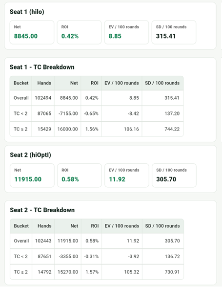

補充：Hi-Opt
Hi-Opt I 是比 Hi-Lo 更進階的系統。這個專案中的 Hi-Opt I 使用 playing count、ace side count，以及修正過的 betting / insurance true count。
Hi-Opt I 的重點不是只把 Hi-Lo 的牌值換掉，而是把「遊戲決策」和「下注 / 保險」使用的 count 拆開處理。Playing decision 使用原始 Hi-Opt I running count 換算出的 Playing TC；下注與保險則另外把 A 的缺口納入修正，讓 A 對 blackjack 與下注價值的影響被反映進去。
Hi-Opt I 牌值
| 牌 | 計數 |
|---|---|
| 3-6 | +1 |
| 2、7、8、9 | 0 |
| 10、J、Q、K | -1 |
| A | 0，另外用 ace side count 追蹤 |
計數指標
在 app 的 Hi-Opt I 模式中，畫面與策略判斷會用到下列幾個指標。最容易混淆的是 Playing TC 和 Betting TC：前者用於 hit、stand、double、split、surrender 等 playing decision；後者用於下注大小。
| 指標 | 意義 | 公式 / 補充 |
|---|---|---|
| Running Count | Ace-neutral 主計數 | A = 0 |
| Playing TC | 用於 playing decision | RC / decksRemaining |
| Ace Seen | 另外追蹤已出現的 A | Side count |
| Ace Deficit | 已出現的 A 比理論預期少多少 | usedCards / 13 - aceSeen |
| Adjusted RC | 用 ace deficit 與 k 修正後的 RC | RC + k × Ace Deficit |
| Betting TC | 用於下注 | Adjusted RC / decksRemaining |
| Insurance TC | 用於保險 | 目前與 betting TC 相同 |
核心 Deviations
目前 App 的核心 index spec 包含 insurance、surrender、hard hand、10,10 分牌，以及部分 double。和 Hi-Lo 相比，Hi-Opt I 的概念更精細，但也多了 ace side count 與 true count 修正，因此實際結果會受到 Side A 的估算方式、下注門檻 k 值與使用情境影響。
保險
| 情境 | 基本策略 | Deviation |
|---|---|---|
| 莊家 A | 不保險 | Insurance TC >= +3 時保險 |
Surrender Deviations
| 玩家手牌 | 莊家 | Deviation |
|---|---|---|
| 15 | A | H17 時 Playing TC >= +1 投降；S17 時 Playing TC >= +2 投降 |
| 15 | 9 | Playing TC >= +2 時投降 |
| 14 | 10 | Playing TC >= +3 時投降 |
Hard Hand Deviations
| 玩家手牌 | 莊家 | 基本策略 | Deviation |
|---|---|---|---|
| 16 | 10 | H / R | 未投降且 Playing TC >= 0 時 Stand |
| 15 | 10 | H / R | 未投降且 Playing TC >= +4 時 Stand |
| 16 | 9 | Hit | Playing TC >= +5 時 Stand |
| 13 | 2 | Hit | Playing TC >= -1 時 Stand |
| 13 | 3 | Hit | Playing TC >= -2 時 Stand |
| 12 | 2 | Hit | Playing TC >= +3 時 Stand |
| 12 | 3 | Hit | Playing TC >= +2 時 Stand |
| 12 | 4 | Stand | Playing TC < 0 時 Hit |
| 12 | 5 | Stand | Playing TC < -2 時 Hit |
| 12 | 6 | Stand | Playing TC < -1 時 Hit |
Pair Split Deviations
| Pair | 莊家 | 基本策略 | Deviation |
|---|---|---|---|
| 10,10 | 5 | Stand | Playing TC >= +5 時 Split |
| 10,10 | 6 | Stand | Playing TC >= +5 時 Split |
Double Deviations
| 玩家手牌 | 莊家 | Deviation |
|---|---|---|
| 11 | A | Playing TC >= 0 時 Double |
| 10 | 10 | Playing TC >= +4 時 Double |
| 10 | A | Playing TC >= +4 時 Double |
| 9 | 2 | Playing TC >= +1 時 Double |
| 9 | 7 | Playing TC >= +3 時 Double |
App 模擬統計
以下是 Hi-Lo 與 Hi-Opt I 各跑 100000 局的比較。這組結果中 Hi-Opt I 的 EV 較高，但 SD / 100 局也較大；從整體來看，兩者差距沒有想像中明顯。

解讀這類比較時要保留一點彈性。Hi-Opt I 不是單純換一組牌值就能直接和 Hi-Lo 對照，因為它會搭配 A 的 side count，並依不同 k 值修正 betting / insurance true count。換句話說，單次模擬可以提供方向，但不適合只靠一張總表就判定哪個系統絕對比較好。